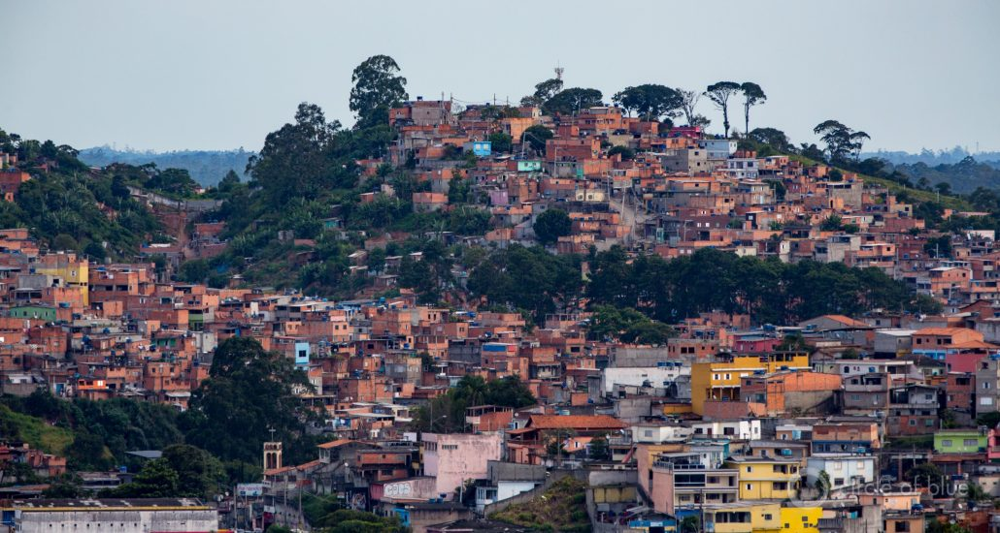

What’s Up With Water – Janaury 27, 2020
This is Eileen Wray-McCann for Circle of Blue.And this is What’s Up with Water, your 'need-to-know news' of the world’s water, made possible by support from people like you.
Prosecutors in Brazil have filed homicide charges against sixteen individuals for their role in a mining dam collapse that killed 270 people.The incident happened twelve months ago in the state of Minas Gerais, in eastern Brazil.The dam held back toxic waste from nearby mining operations.Its collapse swept away homes downstream and polluted rivers with heavy metals.Among the people facing charges is Fabio Schvartsman.He is the former CEO of Vale, the mining company at the center of the catastrophe.Reuters reports that prosecutors are deeply critical of the company’s culture.The prosecutors allege that Schvartsman, Vale, and a German inspection company tried to protect Vale’s reputation by downplaying safety risks and concealing information about structural weaknesses in the dam.In response to the charges, the company issued a statement saying that there is still no final word on what caused the dam to fail.It was the second deadly dam collapse at a Vale operation in Minas Gerais since 2015.
In the U.S., the Trump administration finalized a rule that will reduce protections for streams and wetlands.The rule decreases the number of water bodies that are covered by the Clean Water Act, which is the federal government’s main statute for preventing water pollution.The major impact will be felt in the western states, where many seasonal streams will no longer be protected from development.These 'ephemeral' streams flow only following rainfall or snowmelt and are an important part of desert ecosystems.In issuing the final rule, President Trump completed a campaign promise.He framed the announcement as a boon for farmers, who had chafed under what they felt were limits to the use of their land.But weakening the water protection law will also benefit developers, mining companies, home builders, and oil and gas firms, which will have fewer restrictions on their operations.
Also in the U.S., environmental groups warned the Defense Department not to worsen PFAS contamination when disposing of firefighting foams.Military bases have long used these foams in their operations, and the PFAS chemicals they contain have leached into the water supplies of nearby communities.PFAS are known as 'forever chemicals' because they resist breaking down in the environment, and they are associated with health risks including cancer.The main way the Defense Department disposes of firefighting foam is by incineration.Environmental groups say that burning the chemicals could endanger communities by spreading the toxic materials through the air.Air emissions are a proven pathway for PFAS contamination.For example, a New Hampshire manufacturing plant using PFAS in its operations found that the chemicals exited the facility through air vents.They settled on the land and were absorbed into the soil, eventually contaminating groundwater.While the disposal of firefighting foams and other PFAS materials is tightly regulated, environmentalists are skeptical.Incineration is supposed to take place at hazardous waste facilities that are certified and follow the rules of the Clean Air Act.The Sierra Club and Natural Resources Defense Council are two of the groups that signed the letter to Defense secretary Mark Esper.They are concerned that not all facilities are complying with disposal regulations, which might mean inadvertent PFAS pollution.
This week Circle of Blue looks at a new study showing that the U.S. food trade increasingly depends on groundwater use that is not sustainable.
American agriculture is a global leader among industries.Even as it meets extensive domestic demands, it also exports around $140 billion in farm products each year.Soybeans go to China.Cherries to Japan.Baskets of goods to Canada.
A new study finds that some of that production rests on a risky and unstable foundation.Agriculture is by far the thirstiest industry, and a growing portion of the U.S’s irrigation water is unsustainably mined from groundwater sources that are being depleted.Simply put, groundwater use is unsustainable in the long term when the amount of water taken from an aquifer is greater than the amount that enters, via rainfall or artificial means.
Just how much does farm production rely on unsustainable groundwater?A research team led by the University of Illinois at Urbana-Champaign sought to find out.Megan Konar was a lead author for the study, which was published online in the journal Water Resources Research.She said the team wanted to quantify the unsustainable groundwater used to grow corn, wheat, cotton, and dozens of other crops.They also wanted to know how much unsustainable groundwater is embedded in the food trade within the U.S. and how much is exported.Konar and her colleagues combined groundwater depletion data with county-level food trade data.They found that, between 2002 and 2012, unsustainable groundwater use increased by 32 percent in products traded domestically.For exported goods, the rise in unsustainable groundwater use was somewhat higher, with a 38 percent increase.
The researchers also calculated the biggest groundwater depletion footprint, which they defined as depletion per unit of agricultural production.The state with the largest footprint was Arizona, where rural groundwater use is largely unregulated and water tables are dropping.State lawmakers are now calling for legislation that would require stronger monitoring requirements and water-use reports.
If groundwater is like a bank account, then this is deficit spending.Withdrawals can exceed deposits, but there comes a time when the account is drawn too low.For groundwater, there are local consequences for ecosystems, water supply, and farm income.But, said Konar, the risks of groundwater depletion also threaten the purchasers of those products.
Scott Jasechko studies groundwater as an assistant professor at the University of California, Santa Barbara .He noted that the study opens new windows into water use and the food trade.He told Circle of Blue 'It provides a picture within a given county of something that we hadn’t seen before.'
Jasechko, who was not involved in this research, also praised the study for crossing certain academic divides.He said it united hydrological data with trade flow information that usually is sequestered in the realm of economists.
He said 'They bridged data sets for research communities that rarely talk to each other.'
Konar explained the reason for that union.The wider view reveals how water flows throughout the economy and crosses borders.The United States dominates the export markets for soybeans and coarse grains, giving the country’s farmers a critical role in global food security.
But though the United States is a large agricultural exporter, most of its farm products are sold domestically.Ninety percent of the unsustainable groundwater in 2012 was embedded in products traded within the United States.Collectively, that adds up.The study found that if you combined all the unsustainable groundwater that went into domestic farm products in 2012, it would equal the full volume of Lake Mead, the nation’s largest surface reservoir.
The trade data allowed the research team to see how water risk flows downstream of the farm.In 2002, for instance, California’s major trade partners were Europe and the Americas.A decade later, East Asia devoured the lion’s share of California’s exported output.Trade partners who depend on the U.S. for massive food imports are vulnerable to groundwater depletion, especially if failing supplies cripple agricultural production.
The study’s findings align with other national water trends, which show a shift toward increasing dependence on underground aquifers.While nearly all other types of water withdrawals are decreasing in the United States, groundwater withdrawals for irrigation increased between 2010 and 2015.Groundwater withdrawals climbed 16 percent in that period, according to the U.S. Geological Survey.
And that’s What’s Up With Water from Circle of Blue, which depends on your support for independent water news and analysis.Please visit circleofblue.org and make a difference through your tax-deductible donation.
Posted By: Eileen Wray-McCann

Content Date: n/a
Download Date: 2021-05-12
Document ID: L0C04B7VL